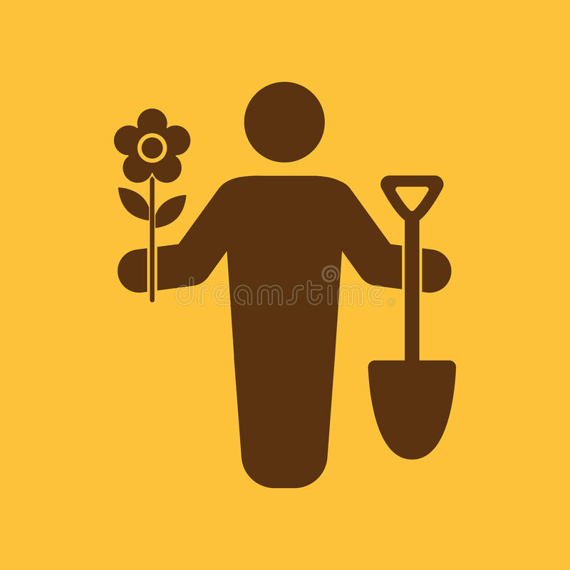

Nos Services
Tonte des gazons
Nous utilisons un matériel adapté pour la tonte des gazons selon vos besoins (par mulching ou ramassage).
Taille raisonnée
Haies
Massifs d'arbustes
La taille que nous réalisons sur nos chantiers est dite raisonnée, le couvert végétal limite le désherbage évitant ainsi la pousse dite de « mauvaises herbes ».
Désherbage
Nous privilégions des méthodes alternatives (thermique et mécanique). Toutefois dans les rares cas où les surfaces ne peuvent pas tolérer un quelconque enherbement, nous sommes dans la capacité de pratiquer la méthode dite chimique, mais toujours dans le respect de la réglementation en vigueur.
Engazonnement
Semis
Plaquage
Mélanges fleuris
Plantations
Arbres, massifs d'arbustes, haies variées
Plantations forestières
Aires stabilisées
(aires de circulation, allées piétonnes, aires de jeux...)
Terrassement
Couches de finition
Pose de bordures
Marquage au sol
Clôtures et portails
Tous types et matériaux
Mobilier urbain
Bancs, tables, corbeilles, bornes, .